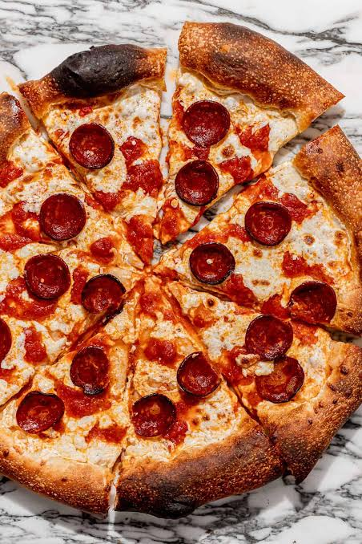

Pepperoni is a popular American variety of spicy salami, usually made from a cured mixture of pork and beef. It is characteristically soft, slightly smoky, and gets its bright red color from delicious spices like paprika and chili peppers.
When baked on a pizza, pepperoni slices curl up and get wonderfully crispy on the edges. It is one of the most popular pizza toppings in the world, loved for its rich, savory flavor that pairs perfectly with melted mozzarella cheese and tomato sauce.